Examples
This section contains a number of examples on how to use CluGen. Each example must be preceded with:
using CluGen, Distributions, Plots, StableRNGsThe StableRNGs package is used in these examples to keep them reproducible between Julia versions. In practice it might be simpler to specify a seed with Random.seed!() and omit the PRNG altogether, or use a built-in PRNG such as the Mersenne Twister.
The plots of each example are generated with helper functions available here.
2D examples
The 2D examples were plotted with the plot_examples_2d() helper function, available here. For plotting an example directly, e.g. for e001, run:
plot(e001.points[:, 1], e001.points[:, 2], seriestype = :scatter, group = e001.clusters)Manipulating the direction of cluster-supporting lines
Using the direction parameter
e001 = clugen(2, 4, 200, [1, 0], 0, [10, 10], 10, 1.5, 0.5; rng = StableRNG(1))
e002 = clugen(2, 4, 200, [1, 1], 0, [10, 10], 10, 1.5, 0.5; rng = StableRNG(1))
e003 = clugen(2, 4, 200, [0, 1], 0, [10, 10], 10, 1.5, 0.5; rng = StableRNG(1))plt = plot_examples_2d(
e001, "e001: direction = [1, 0]",
e002, "e002: direction = [1, 1]",
e003, "e003: direction = [0, 1]")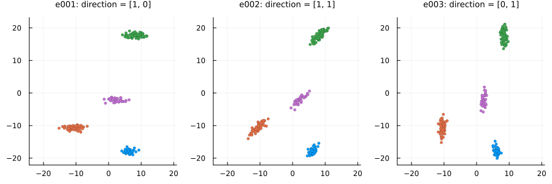
Changing the angle_disp parameter and using a custom angle_deltas_fn function
# Custom angle_deltas function: arbitrarily rotate some clusters by 90 degrees
angdel_90_fn(nclu, astd; rng=nothing) = rand(rng, [0, pi / 2], nclu)
e004 = clugen(2, 6, 500, [1, 0], 0, [10, 10], 10, 1.5, 0.5;
rng = StableRNG(1))
e005 = clugen(2, 6, 500, [1, 0], pi / 8, [10, 10], 10, 1.5, 0.5;
rng = StableRNG(1))
e006 = clugen(2, 6, 500, [1, 0], 0, [10, 10], 10, 1.5, 0.5;
angle_deltas_fn = angdel_90_fn, rng = StableRNG(1))plt = plot_examples_2d(
e004, "e004: angle_disp = 0",
e005, "e005: angle_disp = π/8",
e006, "e006: custom angle_deltas function")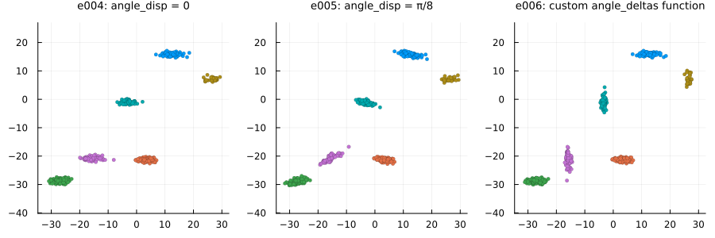
Manipulating the length of cluster-supporting lines
Using the llength parameter
e007 = clugen(2, 5, 800, [1, 0], pi / 10, [10, 10], 0, 0, 0.5;
point_dist_fn = "n", rng = StableRNG(2))
e008 = clugen(2, 5, 800, [1, 0], pi / 10, [10, 10], 10, 0, 0.5;
point_dist_fn = "n", rng = StableRNG(2))
e009 = clugen(2, 5, 800, [1, 0], pi / 10, [10, 10], 30, 0, 0.5;
point_dist_fn = "n", rng = StableRNG(2))plt = plot_examples_2d(
e007, "e007: llength = 0",
e008, "e008: llength = 10",
e009, "e009: llength = 30")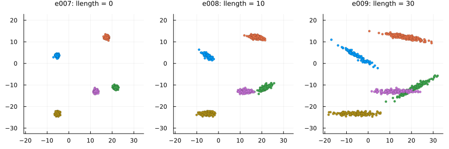
Changing the llength_disp parameter and using a custom llengths_fn function
# Custom llengths function: line lengths grow for each new cluster
llen_grow_fn(nclu, llen, llenstd; rng = nothing) =
llen * (collect(0:(nclu - 1)) + llenstd * randn(rng, nclu))
e010 = clugen(2, 5, 800, [1, 0], pi / 10, [10, 10], 15, 0.0, 0.5;
point_dist_fn = "n", rng = StableRNG(2))
e011 = clugen(2, 5, 800, [1, 0], pi / 10, [10, 10], 15, 10.0, 0.5;
point_dist_fn = "n", rng = StableRNG(2))
e012 = clugen(2, 5, 800, [1, 0], pi / 10, [10, 10], 10, 0.1, 0.5;
llengths_fn = llen_grow_fn, point_dist_fn = "n", rng = StableRNG(2))plt = plot_examples_2d(
e010, "e010: llength_disp = 0.0",
e011, "e011: llength_disp = 5.0",
e012, "e012: custom llengths function")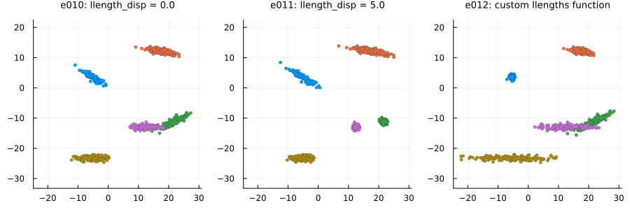
Manipulating relative cluster positions
Using the cluster_sep parameter
e013 = clugen(2, 8, 1000, [1, 1], pi / 4, [10, 10], 10, 2, 2.5; rng = StableRNG(321))
e014 = clugen(2, 8, 1000, [1, 1], pi / 4, [30, 10], 10, 2, 2.5; rng = StableRNG(321))
e015 = clugen(2, 8, 1000, [1, 1], pi / 4, [10, 30], 10, 2, 2.5; rng = StableRNG(321))plt = plot_examples_2d(
e013, "e013: cluster_sep = [10, 10]",
e014, "e014: cluster_sep = [30, 10]",
e015, "e015: cluster_sep = [10, 30]")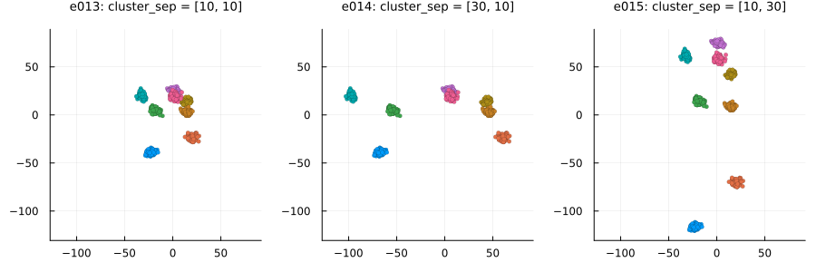
Changing the cluster_offset parameter and using a custom clucenters_fn function
# Custom clucenters function: places clusters in a diagonal
centers_diag_fn(nclu, csep, coff; rng=nothing) =
ones(nclu, length(csep)) .* (1:nclu) * maximum(csep) .+ coff'
e016 = clugen(2, 8, 1000, [1, 1], pi / 4, [10, 10], 10, 2, 2.5;
rng = StableRNG(321))
e017 = clugen(2, 8, 1000, [1, 1], pi / 4, [10, 10], 10, 2, 2.5;
cluster_offset = [20, -20], rng = StableRNG(321))
e018 = clugen(2, 8, 1000, [1, 1], pi / 4, [10, 10], 10, 2, 2.5;
cluster_offset = [-50, -50], clucenters_fn = centers_diag_fn, rng = StableRNG(321))plt = plot_examples_2d(
e016, "e016: default",
e017, "e017: cluster_offset = [20, -20]",
e018, "e018: custom clucenters function")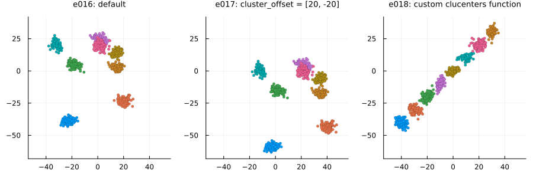
Lateral dispersion and placement of point projections on the line
Normal projection placement (default): proj_dist_fn = "norm"
e019 = clugen(2, 4, 1000, [1, 0], pi / 2, [20, 20], 13, 2, 0.0; rng = StableRNG(456))
e020 = clugen(2, 4, 1000, [1, 0], pi / 2, [20, 20], 13, 2, 1.0; rng = StableRNG(456))
e021 = clugen(2, 4, 1000, [1, 0], pi / 2, [20, 20], 13, 2, 3.0; rng = StableRNG(456))plt = plot_examples_2d(
e019, "e019: lateral_disp = 0",
e020, "e020: lateral_disp = 1",
e021, "e021: lateral_disp = 3")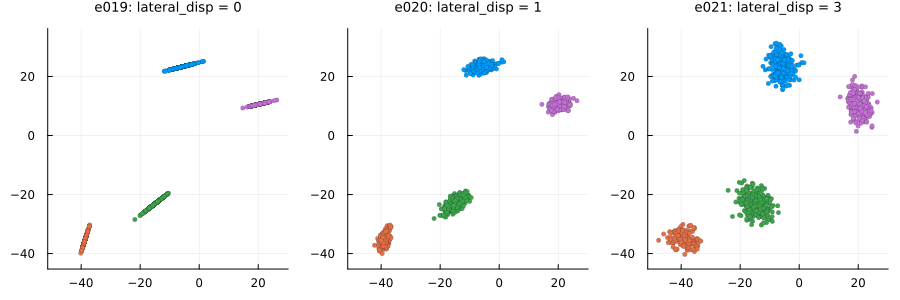
Uniform projection placement: proj_dist_fn = "unif"
e022 = clugen(2, 4, 1000, [1, 0], pi / 2, [20, 20], 13, 2, 0.0;
proj_dist_fn = "unif", rng = StableRNG(456))
e023 = clugen(2, 4, 1000, [1, 0], pi / 2, [20, 20], 13, 2, 1.0;
proj_dist_fn = "unif", rng = StableRNG(456))
e024 = clugen(2, 4, 1000, [1, 0], pi / 2, [20, 20], 13, 2, 3.0;
proj_dist_fn = "unif", rng = StableRNG(456))plt = plot_examples_2d(
e022, "e022: lateral_disp = 0",
e023, "e023: lateral_disp = 1",
e024, "e024: lateral_disp = 3")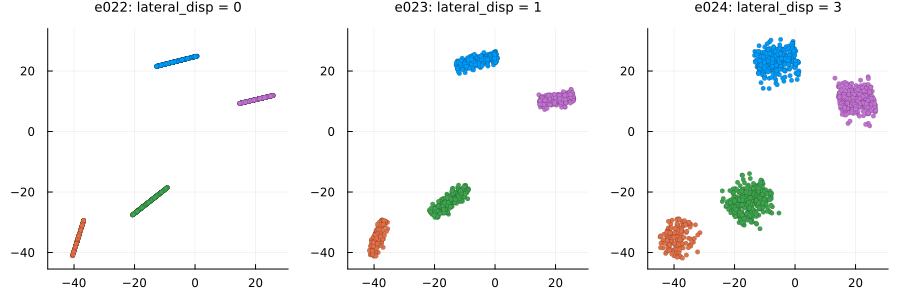
Custom projection placement using the Laplace distribution
# Custom proj_dist_fn: point projections placed using the Laplace distribution
proj_laplace(len, n, rng) = rand(rng, Laplace(0, len / 6), n)
e025 = clugen(2, 4, 1000, [1, 0], pi / 2, [20, 20], 13, 2, 0.0;
proj_dist_fn = proj_laplace, rng = StableRNG(456))
e026 = clugen(2, 4, 1000, [1, 0], pi / 2, [20, 20], 13, 2, 1.0;
proj_dist_fn = proj_laplace, rng = StableRNG(456))
e027 = clugen(2, 4, 1000, [1, 0], pi / 2, [20, 20], 13, 2, 3.0;
proj_dist_fn = proj_laplace, rng = StableRNG(456))plt = plot_examples_2d(
e025, "e025: lateral_disp = 0",
e026, "e026: lateral_disp = 1",
e027, "e027: lateral_disp = 3")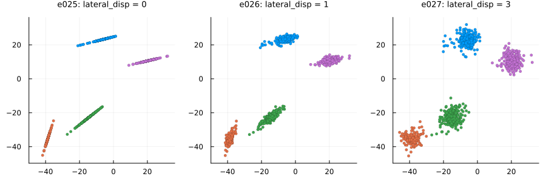
Controlling final point positions from their projections on the cluster-supporting line
Points on hyperplane orthogonal to cluster-supporting line (default): point_dist_fn = "n-1"
# Custom proj_dist_fn: point projections placed using the Laplace distribution
proj_laplace(len, n, rng) = rand(rng, Laplace(0, len / 6), n)
e028 = clugen(2, 5, 1500, [1, 0], pi / 3, [20, 20], 12, 3, 1.0;
rng = StableRNG(345))
e029 = clugen(2, 5, 1500, [1, 0], pi / 3, [20, 20], 12, 3, 1.0;
proj_dist_fn = "unif", rng = StableRNG(345))
e030 = clugen(2, 5, 1500, [1, 0], pi / 3, [20, 20], 12, 3, 1.0;
proj_dist_fn = proj_laplace, rng = StableRNG(345))plt = plot_examples_2d(
e028, "e028: proj_dist_fn=\"norm\" (default)",
e029, "e029: proj_dist_fn=\"unif\"",
e030, "e030: custom proj_dist_fn (Laplace)")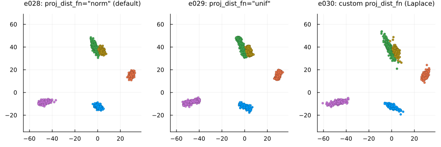
Points around projection on cluster-supporting line: point_dist_fn = "n"
# Custom proj_dist_fn: point projections placed using the Laplace distribution
proj_laplace(len, n, rng) = rand(rng, Laplace(0, len / 6), n)
e031 = clugen(2, 5, 1500, [1, 0], pi / 3, [20, 20], 12, 3, 1.0;
point_dist_fn = "n", rng = StableRNG(345))
e032 = clugen(2, 5, 1500, [1, 0], pi / 3, [20, 20], 12, 3, 1.0;
point_dist_fn = "n", proj_dist_fn = "unif", rng = StableRNG(345))
e033 = clugen(2, 5, 1500, [1, 0], pi / 3, [20, 20], 12, 3, 1.0;
point_dist_fn = "n", proj_dist_fn = proj_laplace, rng = StableRNG(345))plt = plot_examples_2d(
e031, "e031: proj_dist_fn=\"norm\" (default)",
e032, "e032: proj_dist_fn=\"unif\"",
e033, "e033: custom proj_dist_fn (Laplace)")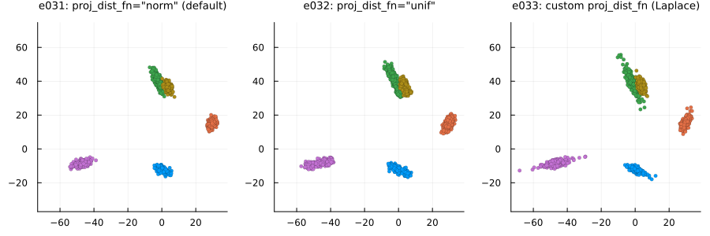
Custom point placement using the exponential distribution
# Custom point_dist_fn: final points placed using the Exponential distribution
function clupoints_n_1_exp(projs, lat_std, len, clu_dir, clu_ctr; rng=nothing)
dist_exp(npts, lstd, rg) = lstd .* rand(rg, Exponential(2 / lstd), npts, 1)
return CluGen.clupoints_n_1_template(projs, lat_std, clu_dir, dist_exp; rng=rng)
end
# Custom proj_dist_fn: point projections placed using the Laplace distribution
proj_laplace(len, n, rng) = rand(rng, Laplace(0, len / 6), n)
e034 = clugen(2, 5, 1500, [1, 0], pi / 3, [20, 20], 12, 3, 1.0;
point_dist_fn = clupoints_n_1_exp, rng = StableRNG(345))
e035 = clugen(2, 5, 1500, [1, 0], pi / 3, [20, 20], 12, 3, 1.0;
point_dist_fn = clupoints_n_1_exp, proj_dist_fn = "unif", rng = StableRNG(345))
e036 = clugen(2, 5, 1500, [1, 0], pi / 3, [20, 20], 12, 3, 1.0;
point_dist_fn = clupoints_n_1_exp, proj_dist_fn = proj_laplace, rng = StableRNG(345))plt = plot_examples_2d(
e034, "e034: proj_dist_fn=\"norm\" (default)",
e035, "e035: proj_dist_fn=\"unif\"",
e036, "e036: custom proj_dist_fn (Laplace)")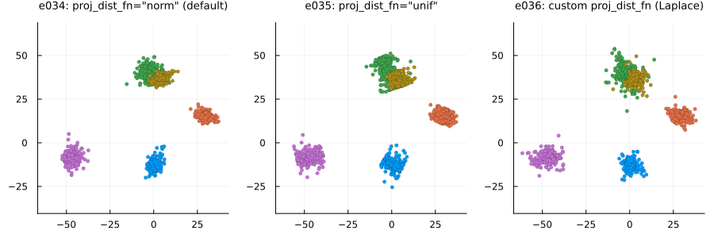
Manipulating cluster sizes
# Custom clusizes_fn (e038): cluster sizes determined via the uniform distribution,
# no correction for total points
clusizes_unif(nclu, npts, ae; rng = nothing) =
rand(rng, DiscreteUniform(1, 2 * npts / nclu), nclu)
# Custom clusizes_fn (e039): clusters all have the same size, no correction for total points
clusizes_equal(nclu, npts, ae; rng = nothing) = (npts ÷ nclu) .* ones(Integer, nclu)
# Custom clucenters_fn (all): yields fixed positions for the clusters
centers_fixed(nclu, csep, coff; rng = nothing) =
[-csep[1] -csep[2]; csep[1] -csep[2]; -csep[1] csep[2]; csep[1] csep[2]]
e037 = clugen(2, 4, 1500, [1, 1], pi, [20, 20], 0, 0, 5;
clucenters_fn = centers_fixed, point_dist_fn = "n",
rng = StableRNG(9))
e038 = clugen(2, 4, 1500, [1, 1], pi, [20, 20], 0, 0, 5;
clucenters_fn = centers_fixed, clusizes_fn = clusizes_unif, point_dist_fn = "n",
rng = StableRNG(9))
e039 = clugen(2, 4, 1500, [1, 1], pi, [20, 20], 0, 0, 5;
clucenters_fn = centers_fixed, clusizes_fn = clusizes_equal, point_dist_fn = "n",
rng = StableRNG(9))plt = plot_examples_2d(
e037, "e037: normal dist. (default)",
e038, "e038: unif. dist. (custom)",
e039, "e039: equal size (custom)")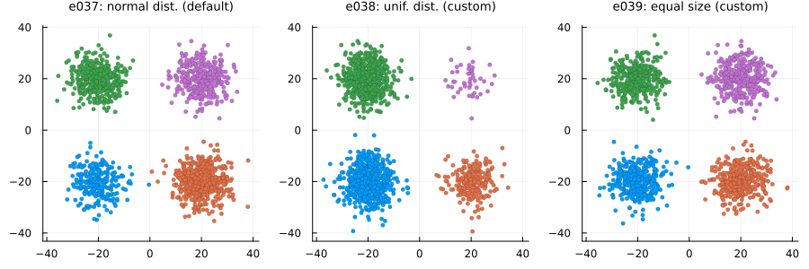
3D examples
The 3D examples were plotted with the plot_examples_3d() helper function available here. For plotting an example directly, e.g. for e040, run:
plot(e040.points[:, 1], e040.points[:, 2], e040.points[:, 3], seriestype = :scatter, group = e040.clusters)`.Manipulating the direction of cluster-supporting lines
Using the direction parameter
e040 = clugen(3, 4, 500, [1, 0, 0], 0, [10, 10, 10], 15, 1.5, 0.5; rng = StableRNG(1))
e041 = clugen(3, 4, 500, [1, 1, 1], 0, [10, 10, 10], 15, 1.5, 0.5; rng = StableRNG(1))
e042 = clugen(3, 4, 500, [0, 0, 1], 0, [10, 10, 10], 15, 1.5, 0.5; rng = StableRNG(1))plt = plot_examples_3d(
e040, "e040: direction = [1, 0, 0]",
e041, "e041: direction = [1, 1, 1]",
e042, "e042: direction = [0, 0, 1]")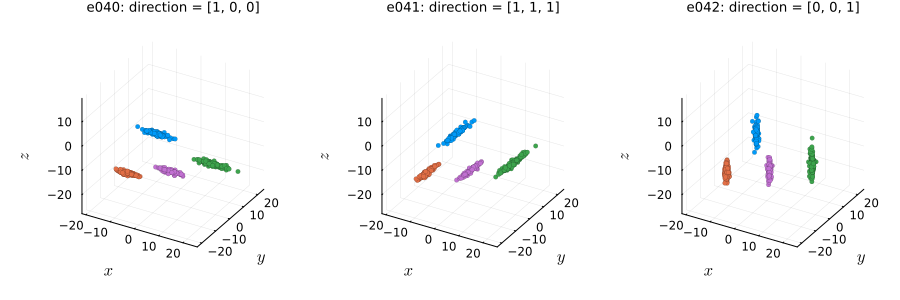
Changing the angle_disp parameter and using a custom angle_deltas_fn function
# Custom angle_deltas function: arbitrarily rotate some clusters by 90 degrees
angdel_90_fn(nclu, astd; rng=nothing) = rand(rng, [0, pi / 2], nclu)
e043 = clugen(3, 6, 1000, [1, 0, 0], 0, [10, 10, 10], 15, 1.5, 0.5;
rng = StableRNG(2))
e044 = clugen(3, 6, 1000, [1, 0, 0], pi / 8, [10, 10, 10], 15, 1.5, 0.5;
rng = StableRNG(2))
e045 = clugen(3, 6, 1000, [1, 0, 0], 0, [10, 10, 10], 15, 1.5, 0.5;
angle_deltas_fn = angdel_90_fn, rng = StableRNG(2))plt = plot_examples_3d(
e043, "e043: angle_disp = 0",
e044, "e044: angle_disp = π / 8",
e045, "e045: custom angle_deltas function")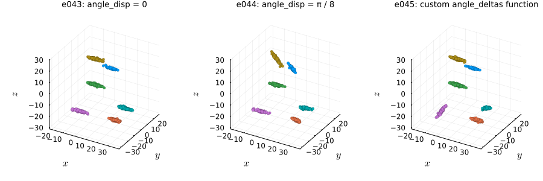
Specifying a main direction for each cluster and changing angle_disp
# Directions for each cluster
dirs = [[0 0 1];[1 1 0];[-1 1 0];[1 0 0];[0 1 0]]
e046 = clugen(3, 5, 1000, dirs, 0, zeros(3), 10, 0, 0.1; rng = StableRNG(77))
e047 = clugen(3, 5, 1000, dirs, π/12, zeros(3), 10, 0, 0.1; rng = StableRNG(77))
e048 = clugen(3, 5, 1000, dirs, π/4, zeros(3), 10, 0, 0.1; rng = StableRNG(77))plt = plot_examples_3d(
e046, "e046: angle_disp = 0",
e047, "e047: angle_disp = π / 12",
e048, "e048: angle_disp = π / 4")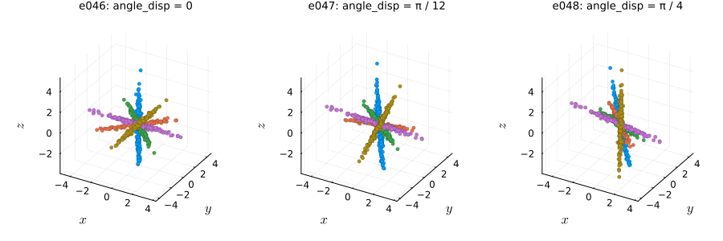
Manipulating the length of cluster-supporting lines
Using the llength parameter
e049 = clugen(3, 5, 800, [1, 0, 0], pi / 10, [10, 10, 10], 0, 0, 0.5;
point_dist_fn = "n", rng = StableRNG(2))
e050 = clugen(3, 5, 800, [1, 0, 0], pi / 10, [10, 10, 10], 10, 0, 0.5;
point_dist_fn = "n", rng = StableRNG(2))
e051 = clugen(3, 5, 800, [1, 0, 0], pi / 10, [10, 10, 10], 30, 0, 0.5;
point_dist_fn = "n", rng = StableRNG(2))plt = plot_examples_3d(
e049, "e049: llength = 0",
e050, "e050: llength = 10",
e051, "e051: llength = 30")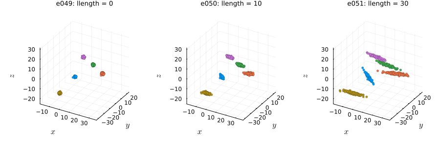
Changing the llength_disp parameter and using a custom llengths_fn function
# Custom llengths function: line lengths tend to grow for each new cluster
llen_grow_fn(nclu, llen, llenstd; rng = nothing) =
llen * (collect(0:(nclu - 1)) + llenstd * randn(rng, nclu))
e052 = clugen(3, 5, 800, [1, 0, 0], pi / 10, [10, 10, 10], 15, 0.0, 0.5;
point_dist_fn = "n", rng = StableRNG(2))
e053 = clugen(3, 5, 800, [1, 0, 0], pi / 10, [10, 10, 10], 15, 10.0, 0.5;
point_dist_fn = "n", rng = StableRNG(2))
e054 = clugen(3, 5, 800, [1, 0, 0], pi / 10, [10, 10, 10], 10, 0.1, 0.5;
llengths_fn = llen_grow_fn, point_dist_fn = "n", rng = StableRNG(2))plt = plot_examples_3d(
e052, "e052: llength_disp = 0.0",
e053, "e053: llength_disp = 10.0",
e054, "e054: custom llengths function")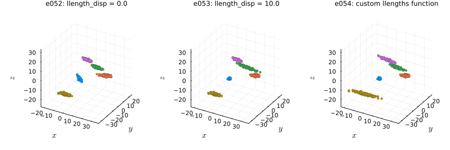
Manipulating relative cluster positions
Using the cluster_sep parameter
e055 = clugen(3, 8, 1000, [1, 1, 1], pi / 4, [30, 10, 10], 25, 4, 3; rng = StableRNG(321))
e056 = clugen(3, 8, 1000, [1, 1, 1], pi / 4, [10, 30, 10], 25, 4, 3; rng = StableRNG(321))
e057 = clugen(3, 8, 1000, [1, 1, 1], pi / 4, [10, 10, 30], 25, 4, 3; rng = StableRNG(321))plt = plot_examples_3d(
e055, "e055: cluster_sep = [30, 10, 10]",
e056, "e056: cluster_sep = [10, 30, 10]",
e057, "e057: cluster_sep = [10, 10, 30]")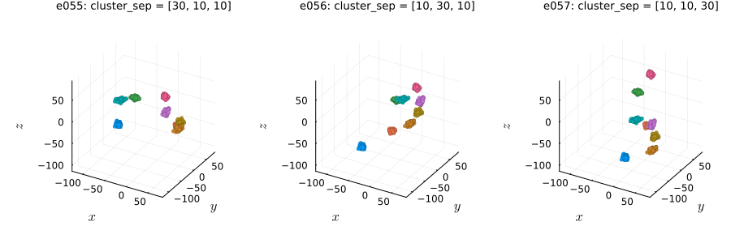
Changing the cluster_offset parameter and using a custom clucenters_fn function
# Custom clucenters function: places clusters in a diagonal
centers_diag_fn(nclu, csep, coff; rng=nothing) = ones(nclu, length(csep)) .* (1:nclu) * maximum(csep) .+ coff'
e058 = clugen(3, 8, 1000, [1, 1, 1], pi / 4, [10, 10, 10], 12, 3, 2.5;
rng = StableRNG(321))
e059 = clugen(3, 8, 1000, [1, 1, 1], pi / 4, [10, 10, 10], 12, 3, 2.5;
cluster_offset = [20, -20, 20], rng = StableRNG(321))
e060 = clugen(3, 8, 1000, [1, 1, 1], pi / 4, [10, 10, 10], 12, 3, 2.5;
cluster_offset = [-50, -50, -50], clucenters_fn = centers_diag_fn, rng = StableRNG(321))plt = plot_examples_3d(
e058, "e058: default",
e059, "e059: cluster_offset = [20, -20, 20]",
e060, "e060: custom clucenters function")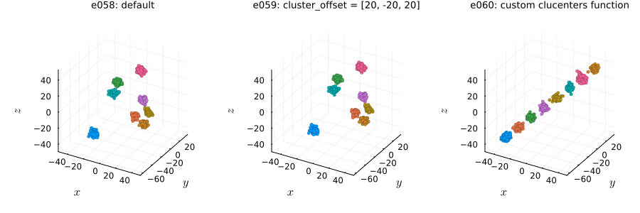
Lateral dispersion and placement of point projections on the line
Normal projection placement (default): proj_dist_fn = "norm"
e061 = clugen(3, 4, 1000, [1, 0, 0], pi / 2, [20, 20, 20], 13, 2, 0.0; rng = StableRNG(456))
e062 = clugen(3, 4, 1000, [1, 0, 0], pi / 2, [20, 20, 20], 13, 2, 1.0; rng = StableRNG(456))
e063 = clugen(3, 4, 1000, [1, 0, 0], pi / 2, [20, 20, 20], 13, 2, 3.0; rng = StableRNG(456))plt = plot_examples_3d(
e061, "e061: lateral_disp = 0",
e062, "e062: lateral_disp = 1",
e063, "e063: lateral_disp = 3")
Uniform projection placement: proj_dist_fn = "unif"
e064 = clugen(3, 4, 1000, [1, 0, 0], pi / 2, [20, 20, 20], 13, 2, 0.0;
proj_dist_fn = "unif", rng = StableRNG(456))
e065 = clugen(3, 4, 1000, [1, 0, 0], pi / 2, [20, 20, 20], 13, 2, 1.0;
proj_dist_fn = "unif", rng = StableRNG(456))
e066 = clugen(3, 4, 1000, [1, 0, 0], pi / 2, [20, 20, 20], 13, 2, 3.0;
proj_dist_fn = "unif", rng = StableRNG(456))plt = plot_examples_3d(
e064, "e064: lateral_disp = 0",
e065, "e065: lateral_disp = 1",
e066, "e066: lateral_disp = 3")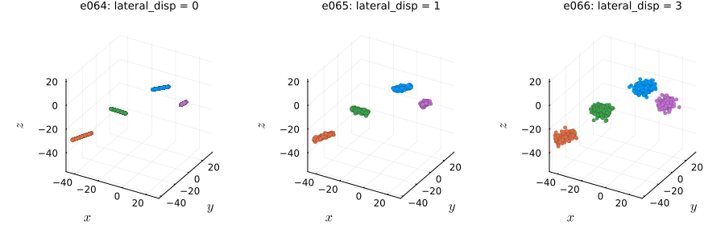
Custom projection placement using the Laplace distribution
# Custom proj_dist_fn: point projections placed using the Laplace distribution
proj_laplace(len, n, rng) = rand(rng, Laplace(0, len / 6), n)
e067 = clugen(3, 4, 1000, [1, 0, 0], pi / 2, [20, 20, 20], 13, 2, 0.0;
proj_dist_fn = proj_laplace, rng = StableRNG(456))
e068 = clugen(3, 4, 1000, [1, 0, 0], pi / 2, [20, 20, 20], 13, 2, 1.0;
proj_dist_fn = proj_laplace, rng = StableRNG(456))
e069 = clugen(3, 4, 1000, [1, 0, 0], pi / 2, [20, 20, 20], 13, 2, 3.0;
proj_dist_fn = proj_laplace, rng = StableRNG(456))plt = plot_examples_3d(
e067, "e067: lateral_disp = 0",
e068, "e068: lateral_disp = 1",
e069, "e069: lateral_disp = 3")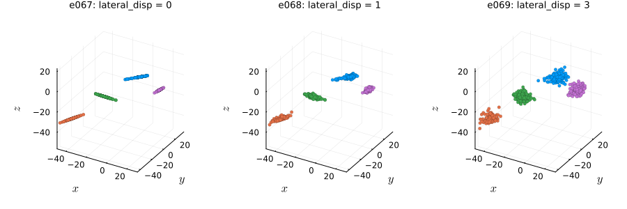
Controlling final point positions from their projections on the cluster-supporting line
Points on hyperplane orthogonal to cluster-supporting line (default): point_dist_fn = "n-1"
# Custom proj_dist_fn: point projections placed using the Laplace distribution
proj_laplace(len, n, rng) = rand(rng, Laplace(0, len / 6), n)
e070 = clugen(3, 5, 1500, [1, 0, 0], pi / 3, [20, 20, 20], 22, 3, 2;
rng = StableRNG(34))
e071 = clugen(3, 5, 1500, [1, 0, 0], pi / 3, [20, 20, 20], 22, 3, 2;
proj_dist_fn = "unif", rng = StableRNG(34))
e072 = clugen(3, 5, 1500, [1, 0, 0], pi / 3, [20, 20, 20], 22, 3, 2;
proj_dist_fn = proj_laplace, rng = StableRNG(34))plt = plot_examples_3d(
e070, "e070: proj_dist_fn=\"norm\" (default)",
e071, "e071: proj_dist_fn=\"unif\"",
e072, "e072: custom proj_dist_fn (Laplace)")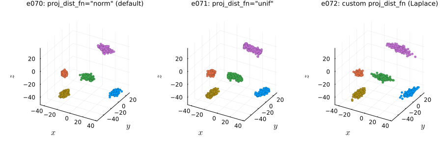
Points around projection on cluster-supporting line: point_dist_fn = "n"
# Custom proj_dist_fn: point projections placed using the Laplace distribution
proj_laplace(len, n, rng) = rand(rng, Laplace(0, len / 6), n)
e073 = clugen(3, 5, 1500, [1, 0, 0], pi / 3, [20, 20, 20], 22, 3, 2;
point_dist_fn = "n", rng = StableRNG(34))
e074 = clugen(3, 5, 1500, [1, 0, 0], pi / 3, [20, 20, 20], 22, 3, 2;
point_dist_fn = "n", proj_dist_fn = "unif", rng = StableRNG(34))
e075 = clugen(3, 5, 1500, [1, 0, 0], pi / 3, [20, 20, 20], 22, 3, 2;
point_dist_fn = "n", proj_dist_fn = proj_laplace, rng = StableRNG(34))plt = plot_examples_3d(
e073, "e073: proj_dist_fn=\"norm\" (default)",
e074, "e074: proj_dist_fn=\"unif\"",
e075, "e075: custom proj_dist_fn (Laplace)")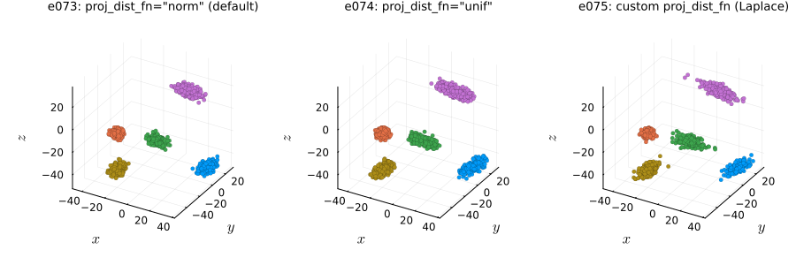
Custom point placement using the exponential distribution
# Custom point_dist_fn: final points placed using the Exponential distribution
function clupoints_n_1_exp(projs, lat_std, len, clu_dir, clu_ctr; rng=nothing)
dist_exp(npts, lstd, rg) = lstd .* rand(rg, Exponential(2 / lstd), npts, 1)
return CluGen.clupoints_n_1_template(projs, lat_std, clu_dir, dist_exp; rng=rng)
end
# Custom proj_dist_fn: point projections placed using the Laplace distribution
proj_laplace(len, n, rng) = rand(rng, Laplace(0, len / 6), n)
e076 = clugen(3, 5, 1500, [1, 0, 0], pi / 3, [20, 20, 20], 22, 3, 2;
point_dist_fn = clupoints_n_1_exp, rng = StableRNG(34))
e077 = clugen(3, 5, 1500, [1, 0, 0], pi / 3, [20, 20, 20], 22, 3, 2;
point_dist_fn = clupoints_n_1_exp, proj_dist_fn = "unif", rng = StableRNG(34))
e078 = clugen(3, 5, 1500, [1, 0, 0], pi / 3, [20, 20, 20], 22, 3, 2;
point_dist_fn = clupoints_n_1_exp, proj_dist_fn = proj_laplace, rng = StableRNG(34))plt = plot_examples_3d(
e076, "e076: proj_dist_fn=\"norm\" (default)",
e077, "e077: proj_dist_fn=\"unif\"",
e078, "e078: custom proj_dist_fn (Laplace)")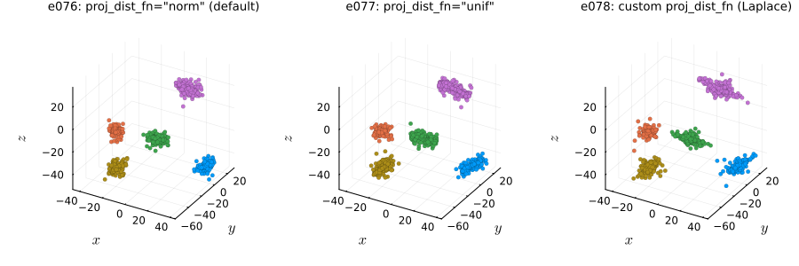
Manipulating cluster sizes
# Custom clusizes_fn (e080): cluster sizes determined via the uniform distribution,
# no correction for total points
clusizes_unif(nclu, npts, ae; rng = nothing) =
rand(rng, DiscreteUniform(1, 2 * npts / nclu), nclu)
# Custom clusizes_fn (e081): clusters all have the same size, no correction for total points
clusizes_equal(nclu, npts, ae; rng = nothing) = (npts ÷ nclu) .* ones(Integer, nclu)
# Custom clucenters_fn (all): yields fixed positions for the clusters
centers_fixed(nclu, csep, coff; rng=nothing) =
[ -csep[1] -csep[2] -csep[3]; csep[1] -csep[2] -csep[3];
-csep[1] csep[2] csep[3]; csep[1] csep[2] csep[3] ]
e079 = clugen(3, 4, 1500, [1, 1, 1], pi, [20, 20, 20], 0, 0, 5;
clucenters_fn = centers_fixed, point_dist_fn = "n",
rng = StableRNG(9))
e080 = clugen(3, 4, 1500, [1, 1, 1], pi, [20, 20, 20], 0, 0, 5;
clucenters_fn = centers_fixed, clusizes_fn = clusizes_unif, point_dist_fn = "n",
rng = StableRNG(9))
e081 = clugen(3, 4, 1500, [1, 1, 1], pi, [20, 20, 20], 0, 0, 5;
clucenters_fn = centers_fixed, clusizes_fn = clusizes_equal, point_dist_fn = "n",
rng = StableRNG(9))plt = plot_examples_3d(
e079, "e079: normal dist. (default)",
e080, "e080: unif. dist. (custom)",
e081, "e081: equal size (custom)")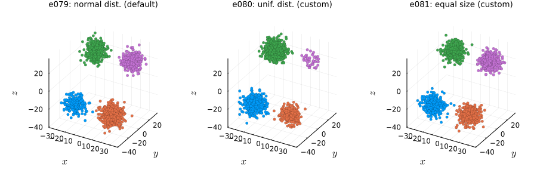
Examples in other dimensions
Basic 1D example with density plot
The following example was plotted with the plot_examples_1d() function available here.
# Custom proj_dist_fn: point projections placed using the Laplace distribution
proj_laplace(len, n, rng) = rand(rng, Laplace(0, len / 6), n)
e082 = clugen(1, 3, 2000, [1], 0, [10], 6, 1.5, 0; rng = StableRNG(45))
e083 = clugen(1, 3, 2000, [1], 0, [10], 6, 1.5, 0; proj_dist_fn = "unif", rng = StableRNG(45))
e084 = clugen(1, 3, 2000, [1], 0, [10], 6, 1.5, 0; proj_dist_fn = proj_laplace, rng = StableRNG(45))plt = plot_examples_1d(
e082, "e082: proj_dist_fn=\"norm\" (default)",
e083, "e083: proj_dist_fn=\"unif\"",
e084, "e084: custom proj_dist_fn (Laplace)")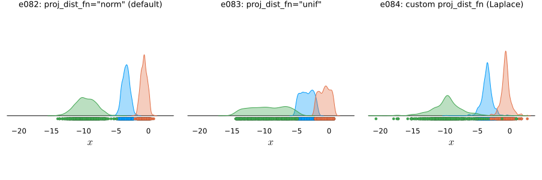
5D example with default optional arguments
The following examples were plotted with the plot_examples_nd() function available here.
nd = 5
e085 = clugen(nd, 6, 1500, [1, 1, 0.5, 0, 0], pi / 16, 30 .* ones(nd), 30, 4, 3;
rng = StableRNG(123))plt = plot_examples_nd(e085, "e085: 5D with optional parameters set to defaults")
5D example with proj_dist_fn = "unif" and point_dist_fn = "n"
nd = 5
e086 = clugen(nd, 6, 1500, [0.1, 0.3, 0.5, 0.3, 0.1], pi / 12, 30 .* ones(nd), 35, 5, 3.5;
proj_dist_fn = "unif", point_dist_fn = "n", rng = StableRNG(321))plt = plot_examples_nd(e086, "e086: 5D with proj_dist_fn=\"unif\" and point_dist_fn=\"n\"")